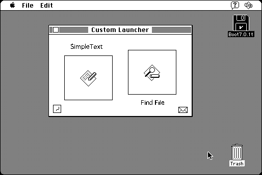

Download
custom-launcher-10.zip (205K) Custom Launcher 1.0 repackaged into a zipped hfs disk image and checksum file. The disk image can be mounted with Mini vMac.
custom-launcher-10.hqx (274K) Custom Launcher 1.0 in the original format.
copyright: Alessandro Levi Montalcini
mod date: Jun 10, 1997
license: shareware
last known url
(gone)
Provides a window with buttons to “launch applications, open documents and folders, or handle URLs”. You can use ResEdit (see the Programming Tools page) to define the buttons and background, including graphics and sounds. Requires System 7.

If you find these downloads useful, please consider helping the Gryphel Project, which hosts them.
Here are the md5 checksums for the downloads, signed with Gryphel Key 5:
--------- GRY SIGNED TEXT --------- 469052a69026fcc9aa8b5c58464181bb custom-launcher-10.zip 6c990af64c79c2dd411f981abbeac29b custom-launcher-10.hqx ------- BEGIN GRY SIGNATURE ------- Gry/4Xa8CFcUzxdN/CNw0vmM39elOOdC9XQbcYR7eYEUtZnt+FUuBFJEBl0ZNcyo f4b3pkHnWD+3zb5TKPAHsf1/MHz1I7rYdyGikgNPK9H5M7Vqf0rjY+P8vC/g6l6G n7BqPfzezYCqRHge5dob4MgFaXdWkrpQizRBVi1qd1sUStIaqsyTpBlENWF0A0lD -------- END GRY SIGNATURE --------